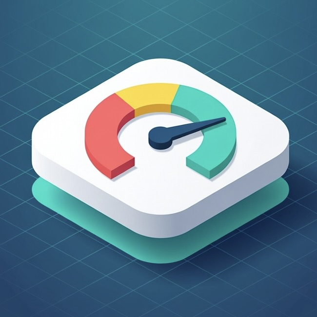

What to look for in a Jira backlog prioritization app
Before comparing specific apps, it helps to clarify what you actually need. Most teams start out thinking "we want RICE" and end up needing something more nuanced. There are four dimensions that separate these apps:
- Framework coverage: Does the app support RICE, WSJF, and ICE as built-in templates, or do you have to build each formula from scratch? All five apps in this comparison support the big three frameworks — but some also include ROI, Value vs. Effort, or Planning Poker.
- Hosting model: Cloud, Data Center, or Server? Forge or Connect? For enterprise teams with data residency requirements, a Forge app (the "Runs on Atlassian" badge) means data never leaves Atlassian's infrastructure. Connect apps route data through the vendor's own servers.
- Single-issue vs. bulk scoring: Some apps put sliders on the issue view for manual scoring. Others let you bulk-score hundreds of tickets from a central table. A few use AI to propose scores automatically.
- Backlog-level insights: A scored backlog is only useful if you can see the ranked result. Look for a dedicated dashboard, a board health signal, or a ranked table — not just custom fields scattered on individual tickets.
Disclosure: One of the apps compared below — Priority Scoring — RICE, WSJF & ICE for Jira — is my own product. I've tried to be fair about its limitations, and I verified each competitor's install count, hosting model, and feature set on the Atlassian Marketplace in April 2026. If you spot an inaccuracy, let me know and I'll correct it.
Feature comparison at a glance
Install counts and badges verified on Atlassian Marketplace listings, April 2026.
| App | Installs | Hosting | Frameworks | AI scoring | Board Health | Vendor |
|---|---|---|---|---|---|---|
| Foxly | 1,572 | Cloud (Cloud Fortified) | RICE · WSJF · ICE · Value/Effort · Planning Poker | ✗ | ✗ | Appfire (Platinum) |
| Priority Scoring Calculator | 159 | Cloud (Forge) | RICE · WSJF · ICE · Custom | ✗ | ✗ | Cedarline Digital |
| Dynamic Scoring for Jira | 119 | Cloud (Forge) | RICE · WSJF · ICE · ROI · Custom | ✗ | ✗ | TypeSwitch |
| Issue Score for Jira | 93 | Data Center / Server only | RICE · WSJF · ICE · Custom | ✗ | ✗ | EverIT (Gold) |
| Priority Scoring — RICE, WSJF & ICE | New (launched April 2026) | Cloud (Forge) | RICE · WSJF · ICE · Custom weights | ✓ Rovo agent | ✓ | Janek Behrens |
Option 1 — Foxly by Appfire
Foxly is the most-installed app in this category by a wide margin. It ships with five prioritization templates (RICE, WSJF, ICE, Value vs. Effort, Custom), async Planning Poker for team voting, a priority matrix for quick-win identification, and cross-project prioritization tables. Owned by Appfire since the Jexo acquisition, which means enterprise-grade support and roadmap continuity.
- Broadest feature set in the category
- Planning Poker built-in — no separate app needed
- Priority Matrix (2×2 Impact/Effort view)
- Cross-project prioritization in one table
- Cloud Fortified trust tier · Platinum Partner support
- Largest user base → most community docs and videos
- Cloud Fortified is not Forge — data routes through vendor servers
- No AI-assisted scoring or proposals
- No backlog-wide health score or quality signal
- Higher price tier than most competitors (mid-range per user)
- Jira Cloud only — no Data Center / Server version
Who it fits: Teams that want a mature, well-supported prioritization tool with Planning Poker included, and that are comfortable with a Cloud Fortified Connect-era app rather than a strict Forge-only posture. See the Foxly Marketplace listing for current pricing.
Option 2 — Priority Scoring Calculator
Priority Scoring Calculator is a focused Forge-native option. It supports RICE, WSJF, and ICE as built-in templates and lets teams build custom formulas. The multi-project scoring view shows issues from different projects on a single screen. Since December 2025 it runs entirely on Forge, so it carries the "Runs on Atlassian" badge — data stays on Atlassian infrastructure.
- "Runs on Atlassian" badge (full Forge since Dec 2025)
- RICE · WSJF · ICE as built-in templates
- Multi-project scoring table on one screen
- Role-based access to formula configuration
- Custom field creation handled inside the app
- No AI-assisted or bulk-propose scoring
- No Planning Poker or team-voting feature
- No backlog health / quality score
- No Rovo agent integration
- Smaller user base → fewer community resources
Who it fits: Teams that want a proven framework set (RICE / WSJF / ICE) with Forge security guarantees and can work without AI or Planning Poker. See the Priority Scoring Calculator listing.
Option 3 — Dynamic Scoring for Jira
Dynamic Scoring carries the "Runs on Atlassian" Forge badge and covers the widest framework set among the smaller apps — RICE, WSJF, ICE, ROI, plus custom formulas with thresholds and rules. A distinctive feature: scores are posted as comments on the issue for full team visibility, giving a built-in audit trail without extra configuration.
- "Runs on Atlassian" Forge badge
- Widest framework set: RICE · WSJF · ICE · ROI · Custom
- Score-as-comment = built-in audit trail
- Threshold rules (alert when score exceeds X)
- Works across all Jira project types
- No AI-assisted scoring
- No backlog health score
- No Rovo agent
- No Planning Poker or voting
- Smallest of the Forge options by install count
Who it fits: Teams that need ROI in addition to RICE / WSJF / ICE, and that value the built-in audit trail from score-as-comment. See the Dynamic Scoring listing.
Option 4 — Issue Score for Jira
Issue Score for Jira is the only app in this comparison that does not support Jira Cloud. It's built for Data Center (11.0.0 – 11.3.4) and Server (8.0.0 – 9.16.1) installations. If your team is on Jira Cloud, this app is not an option — but if you're running on-prem, it offers a mature feature set with slider-based scoring UI, color-coded ranges, dashboard gadgets, and JQL-based bulk calculation via post functions.
- Gold Marketplace Partner with long Data Center track record
- RICE · WSJF · ICE · custom formulas
- Slider-based scoring UI on the issue screen
- Color-coded score ranges (red / yellow / green)
- Dashboard gadgets for value-delivery analysis
- JQL-driven bulk score recalculation via post functions
- No Jira Cloud support — Data Center / Server only
- No AI scoring
- No backlog health score
- No Rovo agent (Rovo is Cloud-only anyway)
- Requires on-prem admin to install and upgrade
Who it fits: Teams running Jira Data Center or Server (not Cloud) who need a mature, well-supported prioritization app with a Gold Partner behind it. For everyone else, skip this option. See the Issue Score listing.
Option 5 — Priority Scoring — RICE, WSJF & ICE for Jira

Forge · Runs on AtlassianPriority Scoring is the newest entry in this category. It covers RICE, WSJF, and ICE as native custom fields on the issue screen, plus two differentiators no other app in this list offers today: a Rovo AI agent that can propose scores for single issues or bulk-score unscored tickets, and a Backlog Health Score (0–100) that flags quality issues — stale tickets, missing story points, missing assignee, unscored items — across a project or portfolio.
- "Runs on Atlassian" Forge badge — data stays on Atlassian
- Rovo AI agent for single and bulk scoring (unique in category)
- Backlog Health Score (0–100) — unique in category
- Portfolio health view across multiple projects
- Custom dimension weights (×1–×5) without scripting
- Live-preview score on the issue view as sliders change
- Newest app in the category — smallest user base
- Rovo features require Atlassian Rovo enablement (Premium+)
- No Planning Poker / team voting (yet)
- No ROI template (RICE / WSJF / ICE + custom weights only)
- Jira Cloud only — no Data Center / Server

RICE, WSJF, and ICE fields shown as sliders on the Jira issue view — scores calculate live as values change

The Rovo agent proposes scores with reasoning — teams keep full control via Suggest / Confirm / Auto modes

Portfolio health view — each project's backlog scored 0–100, spotting which backlog needs grooming first
Who it fits: Teams that want AI-assisted scoring and a quantitative backlog-health signal, and who prefer a strict Forge posture ("Runs on Atlassian" badge). Learn more in the Priority Scoring documentation.
Which option is right for your team?
The decision comes down to four questions. Walk through them in order — the first that matters eliminates several options:
- Are you on Jira Cloud, or Data Center / Server? If Data Center / Server: Issue Score for Jira is the only option in this list. If Cloud: eliminate Issue Score and read on.
- Do you need data to stay on Atlassian infrastructure ("Runs on Atlassian" Forge badge)? If yes: Priority Scoring Calculator, Dynamic Scoring, and Priority Scoring are the three Forge options. Foxly is Cloud Fortified, which is a trust tier for Connect apps — different posture.
- Do you need Planning Poker, a priority matrix, or the largest user base? If yes: Foxly. It's the most mature and most-installed option by a wide margin.
- Do you need AI-assisted scoring, backlog health signals, or a Rovo agent? If yes: Priority Scoring is the only app in this comparison that offers these today.
Rule of thumb: For most Cloud teams with no special needs, Foxly is the safe default — largest user base, broadest feature set, and Appfire backing. For teams that care about strict Forge hosting, pick Priority Scoring Calculator, Dynamic Scoring, or Priority Scoring. For teams that want AI and Health Score features baked in, Priority Scoring is the only option right now — but it's the newest app in the category.
What Jira's built-in Priority field does (and doesn't do)
Worth stating clearly: Jira Cloud does include a Priority field — but it's categorical, not numeric. Every issue gets one of five levels: Highest, High, Medium, Low, Lowest. That's it. There's no RICE, no WSJF, no ICE, no custom formula, no numeric score to sort by, and no ranked backlog beyond manual drag-and-drop in the backlog view.
If your team only has ten open tickets, the native field is fine. At 50+ tickets, it collapses: most items end up as "High" or "Medium" and nothing is truly prioritized. That's why numeric prioritization apps exist. See Jira Priority Ranking for a deeper look at the "everything is P1" failure mode.
Frequently asked questions
Does Jira Cloud include RICE, WSJF, or ICE scoring out of the box?
No. Jira Cloud's built-in Priority field is categorical (Highest/High/Medium/Low/Lowest). Numeric prioritization frameworks require either a Marketplace app — see the five options compared above — or a custom build using Number fields plus Jira Automation rules. See the RICE Scoring in Jira setup guide for the custom-build path.
What is the best Jira app for backlog prioritization?
It depends on what matters most. Foxly is the most-installed option (1,572 installs, Cloud Fortified, Appfire Platinum Partner) with Planning Poker and priority matrix. Priority Scoring Calculator and Dynamic Scoring are smaller Forge-native options. Priority Scoring — RICE, WSJF & ICE for Jira is the only option with a Rovo AI agent and Backlog Health Score. Issue Score for Jira is the right choice only for Data Center / Server installations.
Which Jira prioritization apps are Forge-native?
As of April 2026, three apps in this category carry the "Runs on Atlassian" Forge badge: Priority Scoring Calculator (migrated in December 2025), Dynamic Scoring for Jira, and Priority Scoring — RICE, WSJF & ICE for Jira. Foxly is Cloud Fortified (a separate Connect-era trust tier), not Forge. Issue Score for Jira is Data Center / Server only. See Forge vs. Connect: which is more secure? for what these badges actually guarantee.
How much do Jira backlog prioritization apps cost?
All five apps use per-user monthly pricing via the Atlassian Marketplace — the standard model. Most offer a free trial, and most include the Atlassian default free tier for up to 10 users. Exact per-user prices change, so check each app's pricing tab on the Marketplace before comparing. Foxly tends to sit mid-range; the smaller Forge apps are often at the lower end. Issue Score for Jira uses Data Center pricing (one-time annual license, not per-user monthly).
Can I use AI to score my Jira backlog automatically?
Today, yes — but only through one app in this comparison. Priority Scoring — RICE, WSJF & ICE for Jira includes a Rovo AI agent that can propose RICE, WSJF, or ICE scores for unscored tickets (single issue or bulk). Teams can keep full control by running it in Suggest mode (AI proposes, human confirms) or let it run in Auto mode for well-defined workflows.
Is "Cloud Fortified" the same as "Runs on Atlassian"?
No — and this is the most commonly confused distinction on the Marketplace. "Cloud Fortified" is a trust tier for Connect apps that meet additional security and reliability requirements; the app still runs on the vendor's infrastructure. "Runs on Atlassian" is the badge for Forge apps that run entirely on Atlassian's own infrastructure — no vendor servers involved. For teams with strict data-residency or compliance requirements, Forge is the stronger guarantee. Foxly is Cloud Fortified. Priority Scoring Calculator, Dynamic Scoring, and Priority Scoring are Forge.
Score your Jira backlog with RICE, WSJF, or ICE — with AI assistance
Priority Scoring — RICE, WSJF & ICE for Jira. Forge-native. Rovo AI agent. Backlog Health Score. Free trial included.
Try it free on Marketplace →